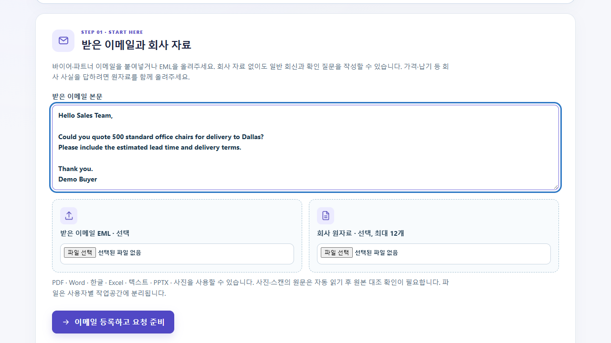
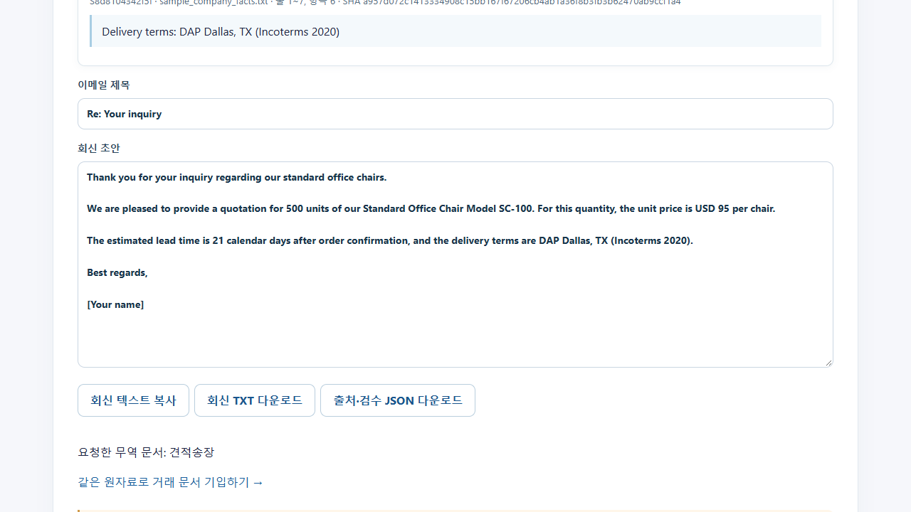

글로벌 이메일 자동화
회신 초안으로
Prezi 원본의 내용을 바탕으로 만든 GitHub 보관용 HTML 사본 · 화살표 키 또는 아래 버튼으로 이동
문서 표준화 AI AGENT:
글로벌 이메일 자동화
바이어의 문의를 이해하고, 검토 가능한 회신 초안을 빠르게 작성함
2026. 10. 08 · 가상 거래 자료를 사용한 시연
매일 반복되는 이메일과 문서 작업
Adobe 2019년 미국 성인 조사
사람인 2021년 국내 직장인 조사
같은 사람인 조사에서 응답한 평균 업무시간
출처: Adobe Email Usage Study (2019) · 사람인 보고서 스트레스 조사 (2021). 두 조사는 조사대상과 시기가 다름.
받은 메일에서 검토 후 발송까지
확인
분석
초안
후 발송
Gmail OAuth·서버 실행 중 약 60초 간격 확인·검토 후 발송 코드와 모의 테스트 구현
실제 Google 계정 연결은 설정 대기 상태임.
회신 언어의 선택지를 넓힘
한국어 · English · 中文(简体)
Español · Français · Deutsch
العربية · Português · 日本語 · עברית
10개 언어의 회신 선택 기능임. 각 언어의 실무 품질은 별도 검증이 필요함.
원문에서 검토 가능한 초안으로
입력
분석
연결
작성
검수
선택적으로 제공한 자료의 출처를 연결해 검토용 회신을 작성함
정확도와 사람의 실제 수정량은 사용자 검증이 필요함.
실제 프로젝트 작업실 화면


가상 거래 자료 · 실제 Gemini 3.5 Flash 호출 · 미발송 · 82초 데모 영상
AI가 제안하고, 담당자가 확정함
생성
검토
발송 확정
실제 발송은 담당자가 수신인·제목·본문을 확인한 뒤 실행하도록 설계함
보안 설계와 남은 검증
현재 설계를 공격 내성이나 법적 적합성의 인증으로 표시하지 않음.
다음 단계: 실제 사용자 검증
초안 수정
비율
초안→최종
시간
재작업
횟수
초안의 완성도는 실제 사용자가 수정한 양으로 판단함
현재 실사용 성과 수치는 미측정. 줌 전환이 있는 Prezi 원본 보기